Task 9 - Monitoring on Umbrella
In this task reports on Cisco Umbrella will be used to monitor it's usage, traffic detection, policy enforcement and the SD-WAN integration.
As a Pre-requisite:, all the prior tasks must be completed successfully. These earlier tasks include integration of SD-WAN sites to Umbrella, configuraiton of Umbrella policies such as Firewall, Web etc. The traffic monitored by Umbrella, as per those policies, will be viewed in this task.
Step 1: Traffic from SD-WAN sites
In this step, additional IP and Web traffic will be initiated for Umbrella monitoring.
- On the RDP session, use
mRemoteNGapplication to logon the console of VM namedSite300-Ubuntu-VPN10. This VM exists on VPN #10 of this site. - Launch Chromium web browser and visit the website
cisco.com. This website should be accessible. - On the Chromium web browser navigate to
facebook.com. As per earlier configured policy, the traffic tofacebook.comshould be blocked by Umbrella on Site-300. -
On the
mRemoteNGapplication launch the Terminal application in the RDP session of theSite300-Ubuntu-VPN10. Then initiate ICMP traffic by issuing belowpingcommand. After few seconds stop the ping by pressingControl-C. A 100% success rate in the ping results confirms successful Internet connectivity through Umbrella.ping 1.1.1.1 -
In the same terminal of the
Site300-VPN10host, execute the command below. After a few seconds, halt the ping by pressingControl-C. According to the previous configuration, Umbrella should block this traffic:ping 8.8.8.8
Next,
* On the RDP session, use mRemoteNG application to logon the console of VM named Site400-Ubuntu-VPN10. This VM exists on VPN #10 of this site.
* From the Chromium Web browser initiate traffic to www.cnn.com and cisco.com. As per earlier task, the traffic to www.cnn.com should be blocked by Umbrella.
* On the mRemoteNG application launch the Terminal application in the RDP session of the Site400-Ubuntu-VPN10. Then initiate ICMP traffic by issuing below ping command. After few seconds stop the ping by pressing Control-C. A 100% success rate in the ping results confirms successful Internet connectivity through Umbrella.
ping 1.1.1.1
Step 2 - Activity Reports for Web URLs
The web and other IP traffic activity from the SD-WAN branch sites over a selected time period can be viewed from Activity Search on Cisco Umbrella. These reports can be filtered by various categories such as identity name, destination, source IP, etc.
-
On the RDP session (jumphost), access the Umbrella web page by clicking on
Umbrella SSObookmark on Google Chrome browser. -
Go to Reporting > Core Reports and click on Activity Search:
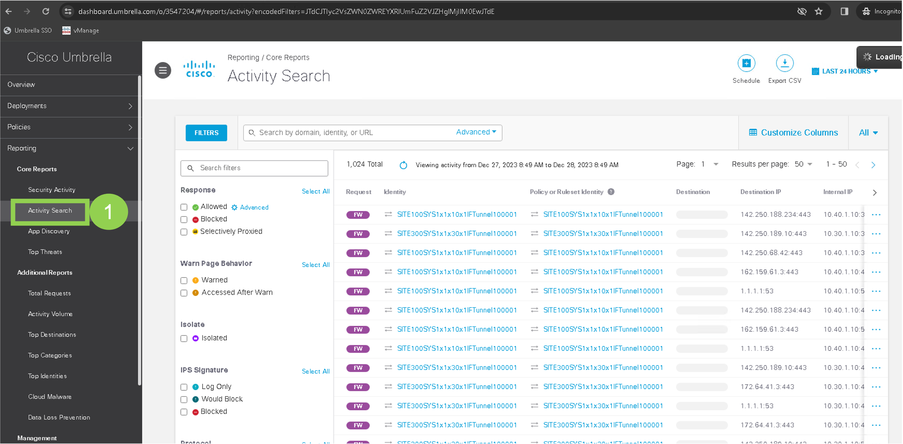
Here you can view the result of every DNS, URL, and IP request from your various SD-WAN sites and other identities. Browse through to view some of the past results.
-
Click on blue Filters button to close the filter tab and then click on Advanced button in the
Searchfield/bar. -
On the
Advanced Searchpage, navigate to to theURLsection and entercnn.com. Then click Apply as shown in below screenshot:
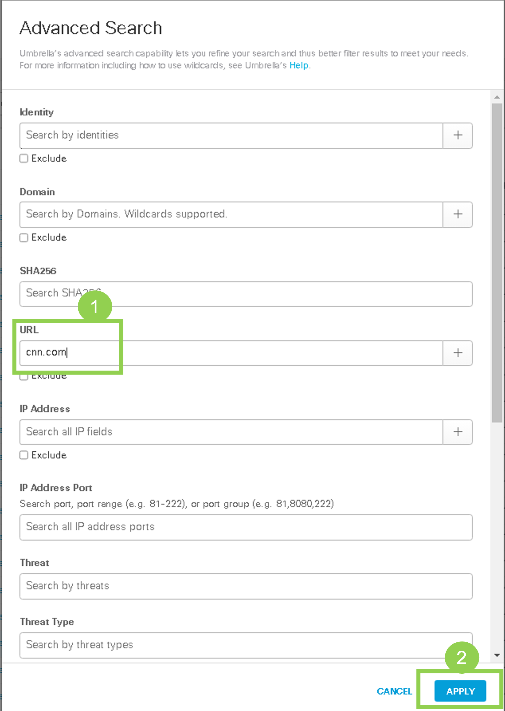
You will now see all the search results matching URL of cnn.com. Below is an example screenshot for these results (your view may be different):
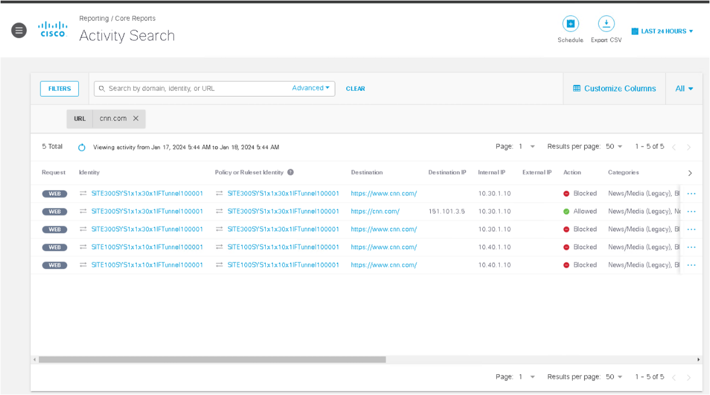
As per these search results:
- Note that the search results shows all Web Requests related to
cnn.comi.e., Secure Web Gateway (or Web Proxy) of Umbrella logged these requests. - Use the Scroll bar at the bottom to move right and review the various fields such as
Action,CategoriesandRuleset or Rulefields of the results (each row) shown on this page. - Further on the right side of each row, click on the three dots (
...) and then clickView Full Detailsto see detailed info as shown in below screenshot:
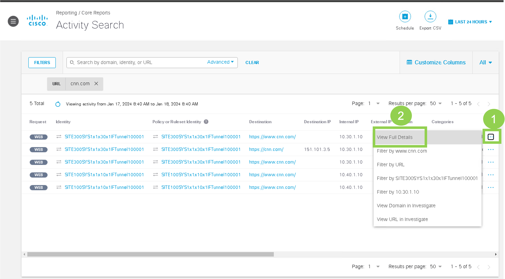
In summary the info in Activty search results matches the configurations performed in earlier tasks!
- Click on Advanced button in the
Searchfield again. On theAdvanced Searchpage, enterfacebook.comas the secondURLand click Apply button as shown below:
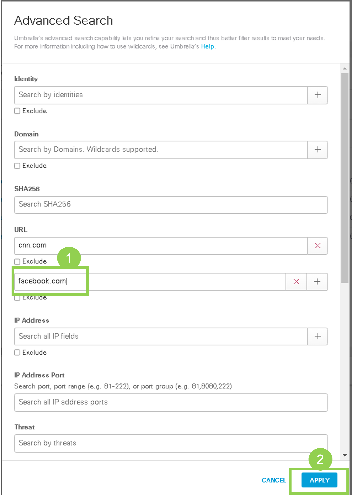
- View the updated Activity results. Below screenshot is an example for such result and your data may vary:
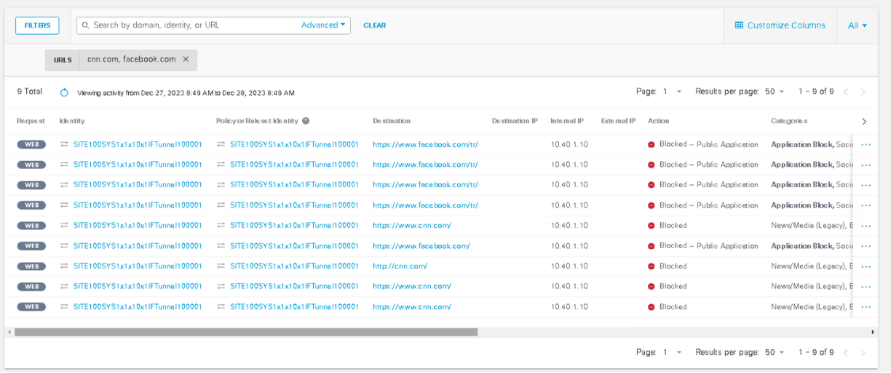
- In the search result, review the various fields such as
Action,CategoriesandRuleset or Rulefields of the results (each row) shown on this page and verify that results match the configurations performed in earlier tasks.
Step 2 - Activity Reports for Firewall
In this task, results of Umbrella monitoring for Firewall traffic will be viewed
-
In the Umbrella Dashboard on Google Chrome, clear the existing
AdvancedFilter by clicking onCLEARbutton or click on cross (X) next to the URL field on this page. Thus Web filters forcnn.comandfacebook.comare cleared from Activity Search page. Alternatively, just navigate back to Reporting > Core Reports > Activity Search. -
Next, Click on Advanced button in the
Searchfield/bar. -
On the
Advanced Searchpage, navigate to theIP Addresssection, enter1.1.1.1and hit Apply: 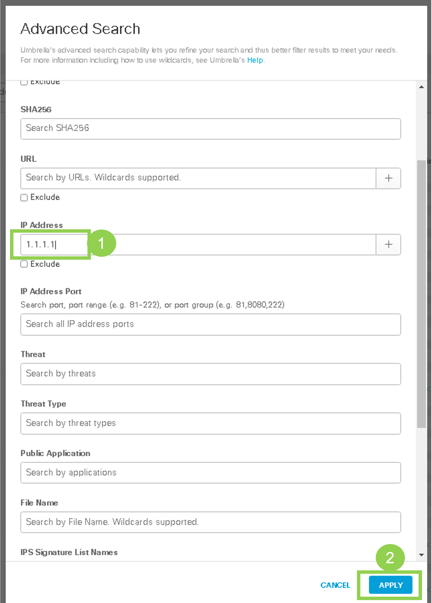 -
Now you can review the search results for all traffic related to IP address of
1.1.1.1that is detected by Umbrella Firewall (FW). Below is an example of this search result - your result may vary:
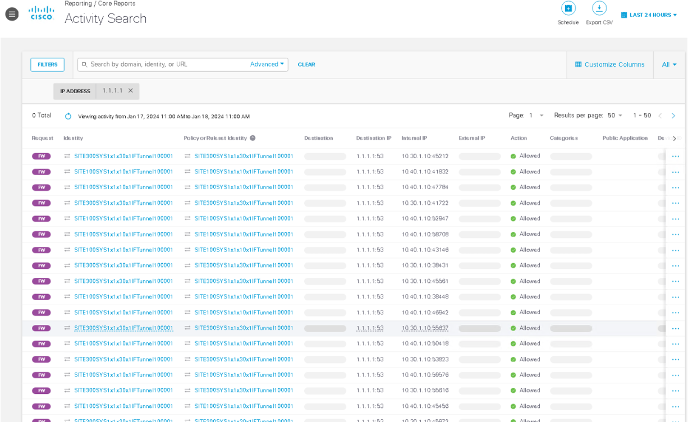
-
Next,
Clearthese search results and remove the filter for1.1.1.1. -
Create a new
Advanced Searchfilter forIP Addressof8.8.8.8(using the same procedure as above). -
Revew the search results IP address of
8.8.8.8. Below is an example of screenshot for this search (note your result may be different). As perActionsfield, you will see bothAllowedandBlocked. Why do you see both of these actions?
Tip: Have a look at details of these packets by clicking on view Full Details and then review the Protocol field (ICMP, UDP)!
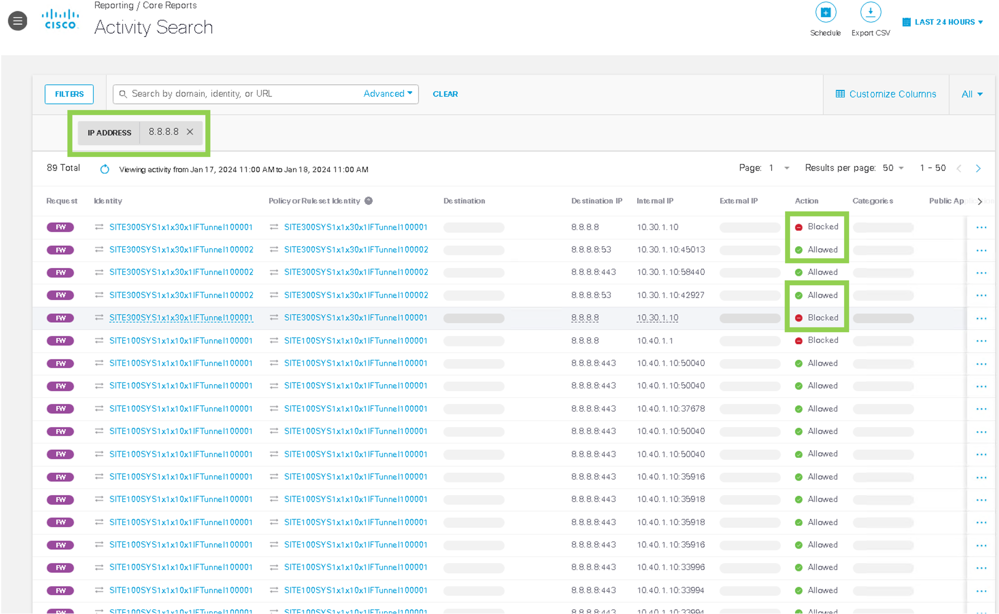
Step 3 - Top Destinations Reports
In this step we will view the traffic to most active destinations on Umbrella Dashboard.
-
On Umbrella Dashboard, navgiate to Reporting > Additional Reports > Top Destinations. It will show the most visited destinations.
-
In previous tasks, on Ubuntu Virtual Machines at the SD-WAN sites, you had browsed to various websites. As Ubuntu VM settings the DNS queries will be routed via DNS Resolver with IP address of
1.1.1.1. Below Figure shows an example screenshot from a lab system. Note: Your screen may not have the same output. Click on1.1.1.1among the list of destinations as shown below:
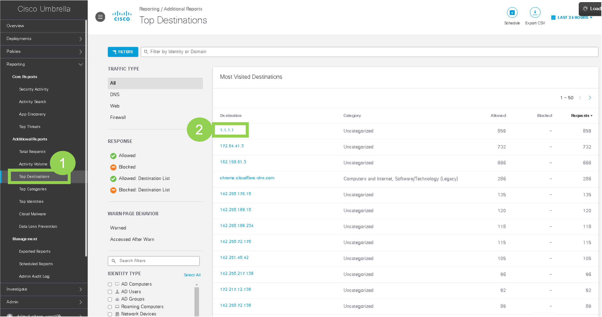
- Once
1.1.1.1is clicked it will show below screenshot. Click onVIEW 1.1.1.1 IN INVESTIGATEto view more details of this IP address as shown below
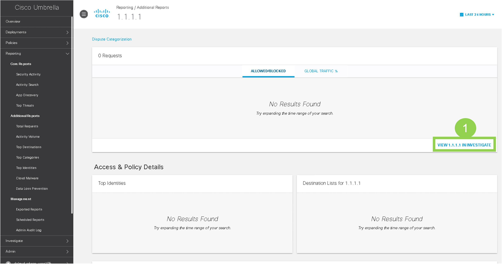
- The investigate page shows more details about this IP address as shown in below screenshot. Click on Talos to view the reputation and other intelligence from Cisco Talos about this IP address. 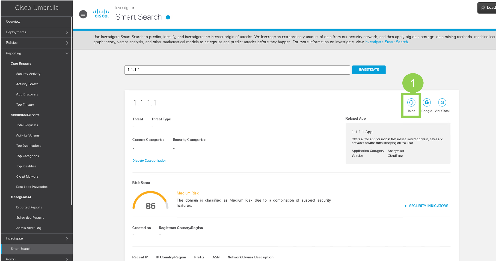
Here is the screenshot from Cisco Talos about this IP address 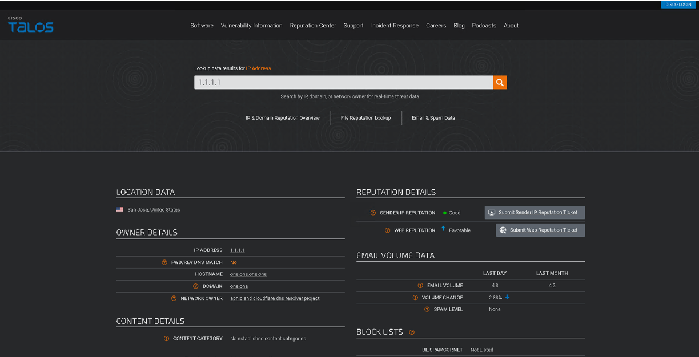
Optional Step 4 - additional reports
If you have time then you can proceed to view various other reports on Umbrella Dashboard:
-
Navigate to Reporting > Additional Request > Top Identities to view the traffic by various Identities. As expected, the Network tunnels (four) will be shown here.
AllowedorBlockedResponses by specific Traffic type can also be viewed on this page by clicking under theResponses. You can vew the Tunnel and site with most traffic and the respective count (i.e. number ofRequests) in your lab pod on this page. -
Navigate to Reporting > Additional Request > Total Request to view Traffic by type (
Firewall,DNS,Web, All) and Responses (Allowed,Blocked). You can check for Allowed or Blocked by Traffic type can be viewed on this page by clicking under theResponses -
Navigate to Reporting > Additional Request > Top Categories to view the traffic by various categories such as Advertisements, Search Engines etc. Note traffic size and number of requests by various categories is shown in these reports.
This concludes the task for using some of the Umbrella monitoring capabilities.